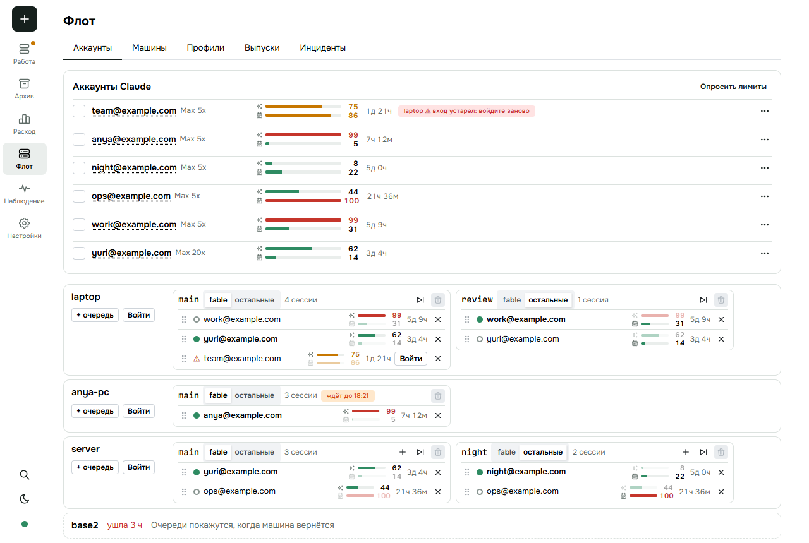
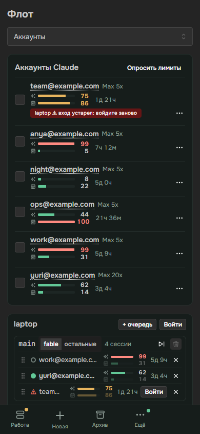

<title>Два запаса недели</title>
<meta name="claude:viewport-fit-sides" content="cover">
<link rel="stylesheet" href="https://fonts.googleapis.com/css2?family=Inter:wght@400;500;600&family=Space+Grotesk:wght@500;600&family=JetBrains+Mono:wght@400;500&display=swap">
<style>
/* раскладка: сверху неделя аккаунта одной полосой, ниже — кто за чем следит, доказательства, проверка */
:root {
  --bg: #f6f5f1; --card: #ffffff; --fg: #1c211f; --muted: #66706b; --line: #d9d8d0; --soft: #eceae3;
  --accent: #1f7a63; --accent-soft: #dcefe8; --fable: #6b4bc4; --fable-soft: #e9e2fa; --new: #b8590f; --new-soft: #fbe9d7; --bad: #b3362b; --bad-soft: #f7e1de; --code: #f0eee7;
}
@media (prefers-color-scheme: dark) { :root:not([data-theme="light"]) {
  --bg: #151917; --card: #1d2320; --fg: #e8ece9; --muted: #98a39d; --line: #343c38; --soft: #252c28;
  --accent: #5fc3a6; --accent-soft: #1d3a31; --fable: #a48cf0; --fable-soft: #2c2547; --new: #f0a25c; --new-soft: #40291a; --bad: #ef8a80; --bad-soft: #43221f; --code: #232a26; color-scheme: dark } }
:root[data-theme="dark"] {
  --bg: #151917; --card: #1d2320; --fg: #e8ece9; --muted: #98a39d; --line: #343c38; --soft: #252c28;
  --accent: #5fc3a6; --accent-soft: #1d3a31; --fable: #a48cf0; --fable-soft: #2c2547; --new: #f0a25c; --new-soft: #40291a; --bad: #ef8a80; --bad-soft: #43221f; --code: #232a26; color-scheme: dark }
body { background: var(--bg); color: var(--fg); font: 15px/1.5 Inter, system-ui, sans-serif; padding-left: max(16px, env(safe-area-inset-left, 0px)); padding-right: max(16px, env(safe-area-inset-right, 0px)); padding-block: 28px 64px; }
main { max-width: 1040px; margin: 0 auto; display: flex; flex-direction: column; gap: 36px; }
h1, h2 { font-family: "Space Grotesk", Inter, sans-serif; text-wrap: balance; margin: 0; }
h1 { font-size: 34px; line-height: 1.1; }
h2 { font-size: 21px; }
.lead { color: var(--muted); max-width: 62ch; margin: 8px 0 0; }
section { display: flex; flex-direction: column; gap: 14px; border-radius: 14px; }
section.read > h2::after { content: " ✓ прочитал"; font: 500 12px Inter, sans-serif; color: var(--accent); }
.card { background: var(--card); border: 1px solid var(--line); border-radius: 14px; padding: 16px; min-width: 0; }
.chg { background: #fff3a8; color: #1c211f; border-radius: 4px; padding: 0 3px; }

/* неделя аккаунта */
.week { display: flex; flex-direction: column; gap: 14px; }
.presets { display: flex; gap: 8px; flex-wrap: wrap; }
.presets button { font: 500 13px Inter, sans-serif; color: var(--fg); background: var(--soft); border: 1px solid var(--line); border-radius: 999px; padding: 6px 12px; cursor: pointer; }
.presets button.on { background: var(--accent-soft); border-color: var(--accent); }
.presets button:focus-visible, input[type=range]:focus-visible, [data-i]:focus-visible { outline: 2px solid var(--accent); outline-offset: 2px; }
.bar { position: relative; display: flex; height: 44px; border-radius: 10px; overflow: hidden; background: var(--soft); border: 1px solid var(--line); }
.bar i { display: block; height: 100%; }
.bar .f { background: var(--fable); }
.bar .o { background: var(--accent); }
.bar .r { background: repeating-linear-gradient(135deg, var(--fable-soft) 0 6px, var(--fable) 6px 8px); }
.scale { display: flex; justify-content: space-between; font: 11.5px "JetBrains Mono", monospace; color: var(--muted); }
.key { display: flex; gap: 16px; flex-wrap: wrap; font-size: 12.5px; color: var(--muted); }
.key i { display: inline-block; width: 12px; height: 12px; border-radius: 3px; margin-right: 6px; vertical-align: -1px; }
.key .f { background: var(--fable); } .key .o { background: var(--accent); } .key .z { background: var(--soft); border: 1px solid var(--line); }
.key .r { background: repeating-linear-gradient(135deg, var(--fable-soft) 0 3px, var(--fable) 3px 5px); }
.knobs { display: grid; grid-template-columns: repeat(auto-fit, minmax(240px, 1fr)); gap: 12px 24px; }
.knobs label { display: grid; grid-template-columns: minmax(0, 1fr) 3.2em; gap: 2px 10px; font-size: 13px; color: var(--muted); align-items: center; }
.knobs label span { grid-column: 1 / -1; }
.knobs output { font: 600 14px "Space Grotesk", sans-serif; color: var(--fg); text-align: right; font-variant-numeric: tabular-nums; }
.knobs input { width: 100%; accent-color: var(--accent); }
.knobs .kf input { accent-color: var(--fable); }
.two { display: grid; grid-template-columns: repeat(auto-fit, minmax(240px, 1fr)); gap: 12px; }
.res { border: 1px solid var(--line); border-radius: 12px; padding: 12px 14px; display: flex; flex-direction: column; gap: 8px; min-width: 0; }
.res h3 { margin: 0; font: 600 13px Inter, sans-serif; display: flex; justify-content: space-between; gap: 8px; align-items: baseline; }
.res h3 b { font: 600 26px "Space Grotesk", sans-serif; font-variant-numeric: tabular-nums; }
.res .m { height: 8px; border-radius: 4px; background: var(--soft); overflow: hidden; }
.res .m i { display: block; height: 100%; background: var(--accent); }
.res.rf .m i { background: var(--fable); }
.res .q { font-size: 13px; border-radius: 8px; padding: 6px 10px; background: var(--accent-soft); }
.res .q.stop { background: var(--bad-soft); color: var(--bad); }

/* диаграмма */
.dia { overflow-x: auto; }
.dia svg { display: block; min-width: 760px; width: 100%; height: auto; }
.dia text { font: 500 13px Inter, sans-serif; fill: var(--fg); }
.dia text.s { font-size: 11.5px; fill: var(--muted); font-weight: 400; }
.n rect { fill: var(--card); stroke: var(--line); stroke-width: 1.5; }
.n.new rect { fill: var(--new-soft); stroke: var(--new); }
.n.fb rect { fill: var(--fable-soft); stroke: var(--fable); }
.n.ot rect { fill: var(--accent-soft); stroke: var(--accent); }
.a path { stroke: var(--muted); stroke-width: 1.6; fill: none; }
.a.new path { stroke: var(--new); }
.a text { fill: var(--muted); font-size: 11.5px; font-weight: 400; }
.a.new text { fill: var(--new); }
.dia marker path { fill: var(--muted); stroke: none; }
.dia marker.mn path { fill: var(--new); }
[data-i] { cursor: pointer; }
[data-i]:hover rect, [data-i].on rect { stroke-width: 2.6; }
[data-i]:hover path, [data-i].on path { stroke-width: 3; }
.say { border-left: 3px solid var(--accent); background: var(--soft); border-radius: 0 10px 10px 0; padding: 10px 14px; min-height: 44px; }
.say b { font-weight: 600; }
pre { font: 12.5px/1.45 "JetBrains Mono", monospace; background: var(--code); border-radius: 8px; padding: 10px 12px; overflow-x: auto; margin: 8px 0 0; }
.legend { display: flex; gap: 16px; flex-wrap: wrap; font-size: 12.5px; color: var(--muted); }
.legend i { display: inline-block; width: 12px; height: 12px; border-radius: 3px; margin-right: 6px; vertical-align: -1px; border: 1.5px solid var(--line); background: var(--card); }
.legend i.new { background: var(--new-soft); border-color: var(--new); }

/* доказательства */
.grid { display: grid; grid-template-columns: repeat(auto-fit, minmax(230px, 1fr)); gap: 12px; }
.tile b { display: block; font: 600 26px "Space Grotesk", sans-serif; font-variant-numeric: tabular-nums; }
.tile span { color: var(--muted); font-size: 13px; }
.tile code { display: block; margin-top: 8px; font: 11.5px "JetBrains Mono", monospace; color: var(--muted); overflow-wrap: anywhere; }
.shots { display: grid; grid-template-columns: minmax(0, 3fr) minmax(0, 1fr); gap: 12px; align-items: start; }
.shots figure { margin: 0; }
.shots img { width: 100%; border: 1px solid var(--line); border-radius: 10px; display: block; }
.shots figcaption { font-size: 12.5px; color: var(--muted); margin-top: 6px; }
.et { display: grid; grid-template-columns: minmax(0, 1fr) 28px minmax(0, 1fr); gap: 8px; align-items: center; padding: 10px 0; border-top: 1px solid var(--line); }
.et:first-child { border-top: 0; }
.et .in, .et .out { font-size: 13.5px; border-radius: 8px; padding: 8px 10px; background: var(--soft); min-width: 0; overflow-wrap: anywhere; }
.et .out { background: var(--accent-soft); }
.et .ar { text-align: center; color: var(--muted); }
.et small { display: block; color: var(--muted); font-size: 11.5px; }
.mini { display: flex; height: 8px; border-radius: 4px; overflow: hidden; background: var(--card); margin-top: 6px; }
.mini i { display: block; height: 100%; }
.mini .f { background: var(--fable); } .mini .o { background: var(--accent); }
.gate { font: 13px/1.7 "JetBrains Mono", monospace; white-space: pre-wrap; overflow-wrap: anywhere; }
.fork { display: grid; grid-template-columns: repeat(auto-fit, minmax(200px, 1fr)); gap: 10px; }
.fork div { border-radius: 10px; padding: 10px 12px; border: 1px solid var(--line); font-size: 13.5px; }
.fork .rec { border-color: var(--accent); background: var(--accent-soft); }
.fork small { display: block; color: var(--muted); font-size: 11.5px; text-transform: uppercase; letter-spacing: .05em; }
.fork-q { font-weight: 600; margin: 0 0 8px; }
.steps { display: flex; flex-direction: column; gap: 10px; counter-reset: st; }
.steps .card { display: grid; grid-template-columns: 34px minmax(0, 1fr); gap: 4px 12px; }
.steps .card::before { counter-increment: st; content: counter(st); font: 600 20px "Space Grotesk", sans-serif; color: var(--accent); grid-row: span 2; }
.steps .done { font-size: 13px; color: var(--muted); }
.steps .done b { color: var(--accent); font-weight: 600; }
@media (max-width: 620px) { h1 { font-size: 27px; } .et { grid-template-columns: 1fr; } .et .ar { display: none; } .shots { grid-template-columns: 1fr; } .shots .ph img { max-width: 260px; } }
</style>

<main>
<header>
  <h1>Два запаса недели</h1>
  <p class="lead">Неделя аккаунта Claude делится на два запаса: Fable и остальные модели. Очередь следит за своим запасом и не трогает чужой — Fable выбирается до конца на каждом аккаунте, остальное достаётся Opus. Работа: маленькая.</p>
</header>

<section id="b-week" data-block>
  <h2>Неделя аккаунта</h2>
  <div class="card week">
    <div class="presets" id="presets"></div>
    <div>
      <div class="bar" id="bar" role="img" aria-label="Неделя аккаунта"><i class="f"></i><i class="o"></i><i class="r"></i></div>
      <div class="scale"><span>0</span><span>50 % недели — потолок Fable</span><span>100</span></div>
    </div>
    <div class="key"><span><i class="f"></i>потратил Fable</span><span><i class="o"></i>потратили остальные</span><span><i class="r"></i>держим для Fable</span><span><i class="z"></i>свободно остальным</span></div>
    <div class="knobs">
      <label class="kf"><span>Fable потратил, % недели</span><input id="kf" type="range" min="0" max="50" value="48"><output id="of">48</output></label>
      <label><span>Остальные потратили, % недели</span><input id="ko" type="range" min="0" max="100" value="43"><output id="oo">43</output></label>
    </div>
    <div class="two">
      <div class="res rf"><h3>Запас Fable <b id="nf">96</b></h3><div class="m"><i id="mf"></i></div><div class="q" id="qf"></div></div>
      <div class="res"><h3>Запас остальных <b id="no">86</b></h3><div class="m"><i id="mo"></i></div><div class="q" id="qo"></div></div>
    </div>
  </div>
</section>

<section id="b-flow" data-block>
  <h2>Кто за чем следит</h2>
  <div class="card dia">
    <svg viewBox="0 0 920 330" role="img" aria-label="Путь числа лимита от Claude до очереди">
      <defs>
        <marker id="ar" markerWidth="9" markerHeight="9" refX="8" refY="4.5" orient="auto"><path d="M0,0 L9,4.5 L0,9 z"/></marker>
        <marker id="arn" class="mn" markerWidth="9" markerHeight="9" refX="8" refY="4.5" orient="auto"><path d="M0,0 L9,4.5 L0,9 z"/></marker>
      </defs>
      <g class="n" data-i="turn"><rect x="20" y="28" width="170" height="54" rx="10"/><text x="105" y="52" text-anchor="middle">Сессия</text><text class="s" x="105" y="70" text-anchor="middle">ход закончился</text></g>
      <g class="n" data-i="page"><rect x="20" y="248" width="170" height="54" rx="10"/><text x="105" y="272" text-anchor="middle">Страница аккаунтов</text><text class="s" x="105" y="290" text-anchor="middle">две полоски</text></g>
      <g class="n new" data-i="host"><rect x="290" y="128" width="190" height="74" rx="10"/><text x="385" y="156" text-anchor="middle">Аккаунты машины</text><text class="s" x="385" y="175" text-anchor="middle">считает два запаса</text><text class="s" x="385" y="191" text-anchor="middle">из одного ответа</text></g>
      <g class="n" data-i="claude"><rect x="300" y="14" width="170" height="54" rx="10"/><text x="385" y="38" text-anchor="middle">Claude</text><text class="s" x="385" y="56" text-anchor="middle">лимиты аккаунта</text></g>
      <g class="n fb" data-i="qf"><rect x="600" y="62" width="150" height="54" rx="10"/><text x="675" y="86" text-anchor="middle">Очередь fable</text><text class="s" x="675" y="104" text-anchor="middle">запас Fable</text></g>
      <g class="n ot" data-i="qo"><rect x="600" y="214" width="150" height="54" rx="10"/><text x="675" y="238" text-anchor="middle">Очередь остальных</text><text class="s" x="675" y="256" text-anchor="middle">запас остальных</text></g>
      <g class="n" data-i="next"><rect x="800" y="138" width="104" height="54" rx="10"/><text x="852" y="162" text-anchor="middle">Следующий</text><text class="s" x="852" y="180" text-anchor="middle">или ждёт сброса</text></g>

      <g class="a new" data-i="a-turn"><path d="M190,62 C250,70 270,120 296,140" marker-end="url(#arn)"/><text x="112" y="124">числа старше 2 мин</text></g>
      <g class="a new" data-i="a-ask"><path d="M385,128 L385,70" marker-end="url(#arn)"/><text x="394" y="104">спросить</text></g>
      <g class="a" data-i="a-page"><path d="M190,268 C250,262 270,214 296,194" marker-end="url(#ar)"/><text x="118" y="218">список аккаунтов</text></g>
      <g class="a new" data-i="a-qf"><path d="M480,150 C530,140 560,104 598,94" marker-end="url(#arn)"/><text x="486" y="104">Fable ≥ 98 %</text></g>
      <g class="a new" data-i="a-qo"><path d="M480,180 C530,190 560,226 598,236" marker-end="url(#arn)"/><text x="462" y="248">остальные ≥ 98 %</text></g>
      <g class="a" data-i="a-next"><path d="M750,96 C790,104 810,120 838,136" marker-end="url(#ar)"/></g>
      <g class="a" data-i="a-next"><path d="M750,234 C790,226 810,210 838,194" marker-end="url(#ar)"/></g>
    </svg>
  </div>
  <div class="legend"><span><i class="new"></i>меняется</span><span><i></i>как сейчас</span></div>
  <div class="say" aria-live="polite">Нажмите на блок или стрелку.</div>
</section>

<section id="b-proof" data-block>
  <h2>Замеры</h2>
  <div class="grid">
    <div class="card tile"><b>50 %</b><span>недели — потолок Fable, его называет сам Claude</span><code>allowance_percent_of_weekly: 50</code></div>
    <div class="card tile"><b>48 → 95 %</b><span>Fable потратил 48 % недели — это 95 % его лимита</span><code>used_percent_of_weekly: 48 · Fable: 95</code></div>
    <div class="card tile"><b>75 против 95</b><span>один аккаунт в одну минуту: флот и Claude. Число флота — от последней сессии Fable на этой машине</span><code>замер 11 нояб., 8 машин</code></div>
    <div class="card tile"><b>3 из 5</b><span>аккаунтов у 98–100 % недели — Fable на них закрыт, сколько бы его лимита ни осталось</span><code>замер 11 нояб.</code></div>
  </div>
</section>

<section id="b-shots" data-block>
  <h2>Экран аккаунтов — снимки живого прототипа</h2>
  <div class="shots">
    <figure><figcaption>Верхняя полоска — Fable, нижняя — остальные. В очереди ярче та, за которой она следит.</figcaption></figure>
    <figure class="ph"><figcaption>Телефон</figcaption></figure>
  </div>
</section>

<section id="b-etalons" data-block>
  <h2>Эталоны — чем проверяем</h2>
  <div class="card">
    <div class="et"><div class="in">Fable 48, остальные 43<div class="mini"><i class="f" style="width:48%"></i><i class="o" style="width:43%"></i></div><small>факт: замер 11 нояб.</small></div><div class="ar">→</div><div class="out">запас Fable 96 %, остальных 86 %</div></div>
    <div class="et"><div class="in">Очередь остальных; у аккаунта Fable 20, остальные 49<div class="mini"><i class="f" style="width:20%"></i><i class="o" style="width:49%"></i></div><small>слово пользователя: Opus не съедает долю Fable</small></div><div class="ar">→</div><div class="out">очередь уходит на следующий аккаунт; 30 % недели остаются Fable</div></div>
    <div class="et"><div class="in">Очередь fable; у аккаунта Fable 49, остальные 10<div class="mini"><i class="f" style="width:49%"></i><i class="o" style="width:10%"></i></div><small>слово пользователя: Fable — до 100 %</small></div><div class="ar">→</div><div class="out">очередь уходит на следующий; очередь остальных на этом аккаунте работает дальше</div></div>
    <div class="et"><div class="in">Fable выбран: 50, остальные 20<div class="mini"><i class="f" style="width:50%"></i><i class="o" style="width:20%"></i></div><small>слово пользователя: «а потом и Opus»</small></div><div class="ar">→</div><div class="out">запас остальных 40 % — им открыта вся оставшаяся неделя</div></div>
    <div class="et"><div class="in">Остальные потратили 69, Fable 30<div class="mini"><i class="f" style="width:30%"></i><i class="o" style="width:69%"></i></div><small>факт: Claude не даёт больше недели</small></div><div class="ar">→</div><div class="out">запас Fable 98 %: ему остался 1 % недели, а не 20</div></div>
    <div class="et"><div class="in">На тарифе нет Fable<small>факт: в ответе Claude нет доли Fable</small></div><div class="ar">→</div><div class="out">запас остальных — вся неделя; очередь fable этот аккаунт не берёт</div></div>
    <div class="et"><div class="in">Ход закончился, числа аккаунта старше 2 минут<small>слово пользователя: число как на странице аккаунта</small></div><div class="ar">→</div><div class="out">один вопрос Claude; запас у порога — смена аккаунта</div></div>
    <div class="et"><div class="in">Машина, где Fable не запускали<small>факт: 75 против 95</small></div><div class="ar">→</div><div class="out">число Fable — то же, что у Claude</div></div>
  </div>
</section>

<section id="b-forks" data-block>
  <h2>Развилки вам</h2>
  <div class="card">
    <p class="fork-q">Fable выбран на всех аккаунтах очереди fable</p>
    <div class="fork"><div class="rec"><small>рекомендую</small>Очередь ждёт сброса. Модель выбирает человек.</div><div><small>иначе</small>Сессии очереди идут на Opus до сброса и возвращаются на Fable сами.</div></div>
  </div>
  <div class="card">
    <p class="fork-q">Fable на аккаунте никто не тратит</p>
    <div class="fork"><div class="rec"><small>рекомендую</small>Его половина держится до сброса: полоска видна на странице, аккаунт ставится в очередь fable.</div><div><small>иначе</small>Перед сбросом половина отдаётся остальным.</div></div>
  </div>
</section>

<section id="b-gate" data-block>
  <h2>Гейт</h2>
  <div class="card gate">Гейт (18 строк реестров): дубликаты ответственности 0 → 0 · состояния 1 → 0 · логики 0 → 0 · смысла 2 → 0 · других 1 → 0 · лишние коммуникации 0 → 0 · циклы 0 → 0
Числа: модули 0 новых · запросы 0 новых · имена окон в ответе 2 → 2 (seven_day, seven_day_overage_included → fable, other) · окон в записи аккаунта ~25 → 3 · окон под присмотром очереди 3 и 2 → 2 и 2 · источников числа лимита 2 → 1 · настройки 0 · секреты 0 · эталоны 8
Работа: маленькая — форма ответа та же, меняются имена двух окон и правило годности аккаунта
Сделано:
  1. Дубликат состояния · число Fable · бралось из событий сессий и расходилось с Claude; теперь одно — из ответа Claude об аккаунте · выигрыш: расхождение 20 п. п. → 0
  2. Второй путь · числа лимитов · событие сессии и конец хода — только повод спросить Claude, чисел не несут · выигрыш: источников 2 → 1
  3. Одно имя — один смысл · «неделя» · для очереди остальных значила всю неделю, хотя половина — Fable; теперь у каждого вида свой запас · выигрыш: смыслов 2 → 1
  4. Явное · имя окна Fable · чужое имя seven_day_overage_included в четырёх местах заменено своим fable; правило считает одно место, страница получает результат · выигрыш: мест, знающих имя Claude, 4 → 1
  5. Удаление раньше добавления · окна, которые никто не читает · в записи остаются три: 5 часов, Fable, остальные
Проверено и оставлено: вид очереди и «очередь диктует модель» — слово пользователя 11 нояб.; порядок аккаунтов в очереди — все аккаунты сейчас у порога, выбирать по часу сброса нечего; порог 98 % — прежний.
Не трогал как редакторское: слова подсказок у полосок.</div>
</section>

<section id="b-order" data-block>
  <h2>Порядок реализации</h2>
  <div class="steps">
    <div class="card"><div><b>Правило.</b> Два запаса из ответа Claude; очередь следит за пятью часами и своим запасом.</div><div class="done">Готово: <b>тесты Host 197 → 203</b> — шесть эталонов правила.</div></div>
    <div class="card"><div><b>Опрос.</b> Числа — только из ответа Claude; событие сессии и конец хода с числами старше 2 минут — повод спросить.</div><div class="done">Готово: <b>тесты Host 203 → 205</b> — два эталона опроса.</div></div>
    <div class="card"><div><b>Страница.</b> Полоски Fable и остальных — из прототипа.</div><div class="done">Готово: <b>тесты страницы 252 → 252</b> (один заменён), <b>сценарий в браузере 8 из 8</b>.</div></div>
    <div class="card"><div><b>Тестовый флот.</b> Выкладка и живая сверка.</div><div class="done">Готово: <b>расхождение числа Fable с ответом Claude 20 → 0 п. п.</b>; <b>живая проверка 2 из 2</b>: очередь остальных меняет аккаунт у своего порога, очередь fable на нём остаётся.</div></div>
    <div class="card"><div><b>Прод.</b> По вашему слову.</div><div class="done">Готово: <b>8 машин на новой сборке</b>, сессий столько же, сколько до выкладки.</div></div>
  </div>
</section>
</main>

<script>
// неделя аккаунта: два запаса из двух чисел
(() => {
  const A = 50, LIMIT = 98;
  const $ = (id) => document.getElementById(id);
  const kf = $("kf"), ko = $("ko");
  const PRESETS = [["Замер 11 нояб.", 48, 43], ["Свежая неделя", 0, 0], ["Opus съел неделю", 12, 87], ["Fable выбран", 50, 20], ["Остальные у порога", 20, 49]];
  const reserves = (s, o) => {
    const w = Math.min(100, s + o), free = 100 - w, hold = Math.min(Math.max(0, A - s), free);
    return { w, free, hold, fable: Math.round((1 - hold / A) * 100), other: Math.round((1 - (free - hold) / (100 - A)) * 100) };
  };
  const word = (n, kind) => (n >= LIMIT ? [`Очередь ${kind} уходит на следующий аккаунт`, true] : [`Очередь ${kind} работает`, false]);
  function draw() {
    const s = +kf.value;
    ko.max = String(100 - s);
    const o = Math.min(+ko.value, 100 - s);
    const r = reserves(s, o);
    $("of").textContent = s; $("oo").textContent = o;
    const [f, oth, hold] = $("bar").children;
    f.style.width = s + "%"; oth.style.width = o + "%"; hold.style.width = r.hold + "%";
    for (const [id, n, kind] of [["f", r.fable, "fable"], ["o", r.other, "остальных"]]) {
      $("n" + id).textContent = n; $("m" + id).style.width = n + "%";
      const [text, stop] = word(n, kind);
      $("q" + id).textContent = text; $("q" + id).classList.toggle("stop", stop);
    }
    for (const b of $("presets").children) b.classList.toggle("on", +b.dataset.s === s && +b.dataset.o === o);
  }
  for (const [name, s, o] of PRESETS) {
    const b = document.createElement("button");
    b.type = "button"; b.textContent = name; b.dataset.s = s; b.dataset.o = o;
    b.addEventListener("click", () => { kf.value = s; ko.max = String(100 - s); ko.value = o; draw(); });
    $("presets").append(b);
  }
  kf.addEventListener("input", draw); ko.addEventListener("input", draw);
  draw();
})();

// пояснения к блокам и стрелкам диаграммы
const INFO = {
  turn: ["Сессия", "Ход закончился — модуль аккаунтов смотрит, сколько лет числам аккаунта этой очереди."],
  page: ["Страница аккаунтов", "У аккаунта две полоски: Fable и остальные модели, каждая от 0 до 100 % своего запаса. В строке очереди ярче та, за которой она следит."],
  host: ["Аккаунты машины", "Из одного ответа Claude считает два запаса. Запас Fable: сколько осталось от его половины недели и от самой недели — что меньше. Запас остальных: свободная неделя минус то, что держим для Fable."],
  claude: ["Claude", "На вопрос о лимитах аккаунта отдаёт неделю целиком, лимит Fable и его долю в неделе. Это те же числа, что на странице аккаунта у Claude.",
    { ask: "лимиты аккаунта" },
    { rate_limits: { five_hour: null, seven_day: { utilization: 91, resets_at: "2026-11-13T09:59:59Z" }, model_scoped: [{ display_name: "Fable", utilization: 95, resets_at: "2026-11-13T09:59:59Z" }], weekly_scoped_shares: [{ used_percent_of_weekly: 48, allowance_percent_of_weekly: 50 }] } }],
  qf: ["Очередь fable", "В ней только сессии на Fable. Следит за пятью часами и запасом Fable. Запас остальных её не останавливает."],
  qo: ["Очередь остальных", "Opus и прочие модели. Следит за пятью часами и запасом остальных — половину Fable не трогает, пока Fable её не выбрал сам."],
  next: ["Следующий аккаунт", "Первый по порядку очереди, чей запас этого вида ниже порога. Таких нет — очередь ждёт ближайшего сброса. Как сейчас."],
  "a-turn": ["Ход закончился", "Числа аккаунта старше двух минут — повод спросить Claude. Свежие — ничего не происходит. Событие лимита от Claude в сессии — такой же повод, чисел из него не берём."],
  "a-ask": ["Вопрос Claude", "Один вопрос на аккаунт, одновременно — один. Ответ пишется в запись аккаунта: пять часов, запас Fable, запас остальных."],
  "a-page": ["Список аккаунтов", "Страница получает готовые запасы и ничего не считает.",
    { type: "account.list", to: "@laptop" },
    { accounts: [{ id: "yuri@example.com", kind: "claude", ok: true, limits: [{ name: "five_hour", used: 0.4 }, { name: "fable", used: 0.96, resets: 1794650399000 }, { name: "other", used: 0.86, resets: 1794650399000 }] }], slots: [{ name: "main", model: "fable", order: ["yuri@example.com"], account: "yuri@example.com", sessions: 4 }] }],
  "a-qf": ["Порог Fable", "Запас Fable аккаунта дошёл до 98 % — очереди fable, которые на нём стоят, меняют аккаунт."],
  "a-qo": ["Порог остальных", "Запас остальных дошёл до 98 % — очереди остальных меняют аккаунт. На этом аккаунте остаётся нетронутая половина Fable."],
  "a-next": ["Смена аккаунта", "Очередь переходит на следующий аккаунт, её сессии продолжают без перезапуска."],
};
for (const sec of document.querySelectorAll("section")) {
  const say = sec.querySelector(".say");
  if (!say) continue;
  for (const el of sec.querySelectorAll("[data-i]")) {
    el.setAttribute("tabindex", "0");
    const show = () => {
      const [title, text, ask, reply] = INFO[el.dataset.i];
      for (const x of sec.querySelectorAll("[data-i].on")) x.classList.remove("on");
      el.classList.add("on");
      say.textContent = "";
      const b = document.createElement("b"); b.textContent = title + ". "; say.append(b, text);
      for (const j of [ask, reply]) if (j) { const pre = document.createElement("pre"); pre.textContent = JSON.stringify(j, null, 2); say.append(pre); }
    };
    el.addEventListener("click", show);
    el.addEventListener("keydown", (e) => e.key === "Enter" && show());
  }
}
</script>
<script>
// метки «прочитал»: клавиша A (латинская или русская) над блоком
(() => {
  const KEY = "v2-limits.read";
  let read = [];
  try { read = JSON.parse(localStorage.getItem(KEY) ?? "[]"); } catch {}
  let over = null;
  const draw = () => { for (const s of document.querySelectorAll("[data-block]")) s.classList.toggle("read", read.includes(s.id)); };
  for (const s of document.querySelectorAll("[data-block]")) s.addEventListener("mouseenter", () => (over = s));
  document.addEventListener("keydown", (e) => {
    if (!(e.code === "KeyA" || e.key === "a" || e.key === "A" || e.key === "ф" || e.key === "Ф") || e.ctrlKey || e.metaKey || e.altKey || !over) return;
    read = read.includes(over.id) ? read.filter((x) => x !== over.id) : [...read, over.id];
    try { localStorage.setItem(KEY, JSON.stringify(read)); } catch {}
    draw();
  });
  draw();
})();
</script>
